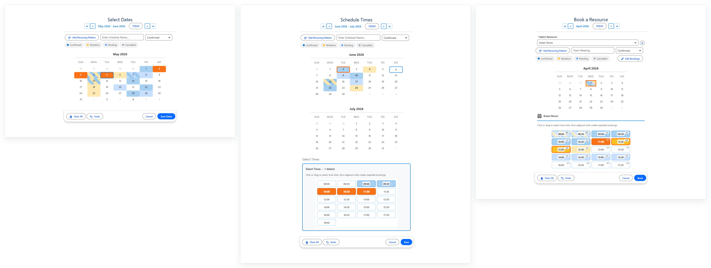
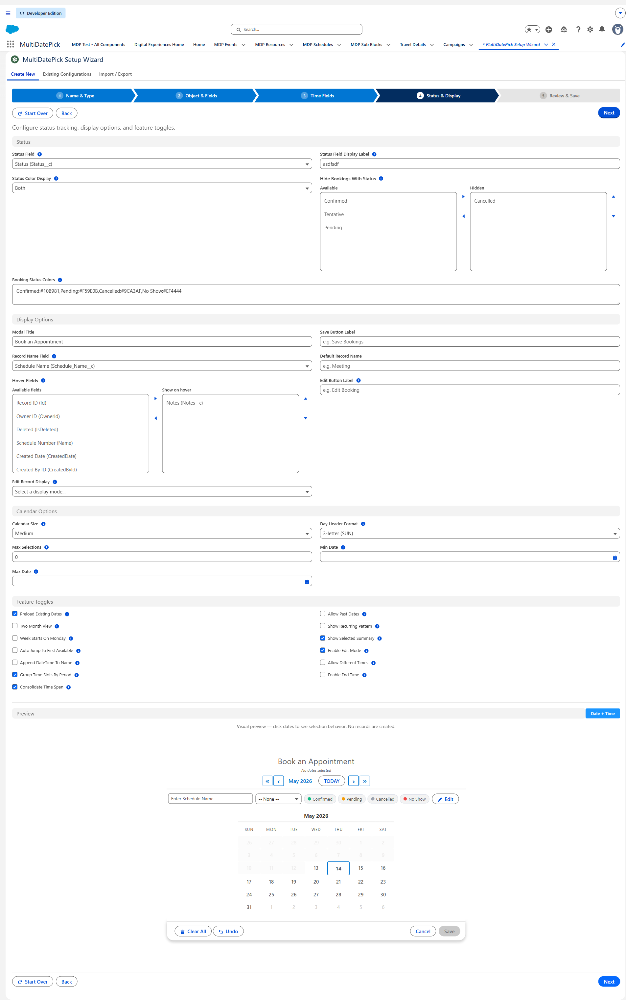
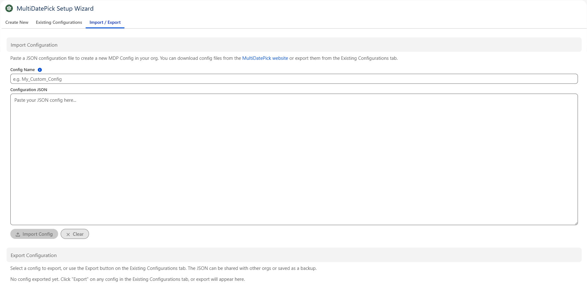

Getting Started
Choose the right component for your use case, configure it with the Setup Wizard, and deploy to any Salesforce surface - all in minutes, no code required.

Which Component Do I Need?
MultiDatePick has three components, each built for a different level of scheduling complexity. Start with the simplest one that fits your use case.
All three components and every feature below ship in the single MultiDatePick package. No tiers, no add-ons, no paid upgrades. Install once and use whichever component fits each job.
Quick Decision Guide
Just dates?
Use Date. Multi-date selection with ranges, recurring patterns, status colors, and blocked dates.
Dates plus times?
Use Date Time. Adds a time grid, conflict detection, and period grouping. No resources.
Booking specific resources?
Use Booking. Schedule against rooms, equipment, or people with availability checking and capacity limits.
Feature Comparison
All three components come in the one package. A dash means that component isn't built for that job - not that it costs extra or sits behind an upgrade.
| Feature | Date | Date Time | Booking |
|---|---|---|---|
| Multi-date selection | ✓ | ✓ | ✓ |
| Drag-to-select ranges | ✓ | ✓ | ✓ |
| Recurring patterns | ✓ | ✓ | ✓ |
| Date range consolidation (endDateField) | ✓ | ✓ | ✓ |
| Status colors | ✓ | ✓ | ✓ |
| Blocked dates | ✓ | ✓ | ✓ |
| Edit mode (inline editing) | ✓ | ✓ | ✓ |
| Setup Wizard & config import | ✓ | ✓ | ✓ |
Named configurations (configName → Config__mdt) | ✓ | ✓ | ✓ |
Hover popover with custom fields (hoverFields) | ✓ | ✓ | ✓ |
| Status filter pills (runtime) | ✓ | ✓ | ✓ |
| Hide bookings by status (admin) | ✓ | ✓ | ✓ |
| Two-month calendar view | ✓ | ✓ | ✓ |
| App Page / Home Page / Experience Site | ✓ | ✓ | ✓ |
| Time slot grid | - | ✓ | ✓ |
| Time period grouping (AM/PM/Eve) | - | ✓ | ✓ |
| Conflict detection | - | ✓ | ✓ |
| Consolidated time span (parent + sub-blocks) | - | ✓ | ✓ |
| Resource selection | - | - | ✓ |
| Multi-resource booking | - | - | ✓ |
| Resource filter (admin-side) | - | - | ✓ |
| Availability checking | - | - | ✓ |
| Capacity tracking & badges | - | - | ✓ |
| Capacity aggregation (Combined / Distinct) | - | - | ✓ |
| Booking record creation | - | - | ✓ |
| Business hours per resource | - | - | ✓ |
Where You Can Use MultiDatePick
All three components work on every major Salesforce surface. Choose the surface that fits your workflow.
Screen Flows
Add MultiDatePick to any Screen Flow for guided, step-by-step scheduling. The component outputs JSON that you parse with the included Invocable Action to create records in your flow logic.
Lightning Record Pages
Place the component directly on a record page for inline date selection. Configure the related object, date field, and relationship field - selected dates automatically create child records linked to the parent.
App Pages
Build standalone scheduling apps with App Pages. Use staticRecordId to link to a parent record when there is no automatic record context.
Home Pages
Add a calendar to the Salesforce Home tab so users see their schedule the moment they log in. Set staticRecordId to a parent record - Home Pages don't auto-inject record context the way Record Pages do.
Experience Sites
Expose scheduling to external users - customers, partners, or community members - via Experience Cloud. Both required targets (lightningCommunity__Page and lightningCommunity__Default) are pre-configured. Set staticRecordId to a parent record since Experience Site pages don't auto-inject one.
Named Configurations
Store property bundles as Custom Metadata records (Config__mdt). Reference a config by name with the configName property - one config, reuse everywhere.
Installation
Install MultiDatePick from the Salesforce AppExchange in two steps.
1 Install from AppExchange
Find MultiDatePick on the Salesforce AppExchange and click Get It Now. Choose whether to install for all users, admins only, or specific profiles. The managed package includes all three components, the Apex controller, the JSON parser, and the Setup Wizard.
2 Verify Installation
Go to Setup → Installed Packages and confirm MultiDatePick appears in the list. Open a Flow or Lightning Record Page in edit mode - you should see the Date, Date Time, and Booking components in the component palette.
Configure with the Setup Wizard
The Setup Wizard walks you through every property, shows a live preview, and deploys your configuration - no manual XML editing.
Want to skip building from scratch? Browse 37 pre-built configs →
Two ways to find your shape
Answer a few questions to get your data shape jump-started - or jump right in and configure every property yourself. Both paths land on the same Custom Metadata record.


1 Open the Setup Wizard
Navigate to the MultiDatePick Setup Wizard App Page in your org, or drag the Setup Wizard component onto any Lightning page in edit mode.
2 Choose Your Component
Select which component you want to configure: Date, Date Time, or Booking. The wizard adjusts its property list to show only the fields relevant to your selection.

3 Configure Properties
Work through each property step by step. The wizard groups properties into logical categories - display settings, constraints, resource configuration, and more. A live preview updates as you make changes so you can see roughly how your calendar will look before you deploy.

4 Deploy or Export
When you're satisfied with the preview, you have two options:
- Deploy - Saves the configuration as a Custom Metadata record (
Config__mdt) in your org. Reference it by name with theconfigNameproperty on any surface. - Export JSON - Downloads a JSON file containing all your property settings. Share it with colleagues, back it up, or import it into another org.
Import a Pre-Built Configuration
Skip the manual setup - download a JSON configuration, paste it into the Setup Wizard, and deploy in seconds.
Browse the Config Library
Answer 3 quick questions or browse by component. PTO trackers, room bookings, field service scheduling, shift rosters, and more - all ready to import.

How to Import
1 Download a Configuration File
Download one of the pre-built JSON configurations above, receive one from a colleague, or export one from another org's Setup Wizard.
2 Open the Setup Wizard
Launch the MultiDatePick Setup Wizard App Page or the Setup Wizard component in your org. Navigate to the Import / Export tab.
3 Copy, Paste & Import
Open the downloaded JSON file, copy its contents, and paste into the import field in the wizard. Give your configuration a name and click Import. The wizard deploys it as a Custom Metadata record. Reference it on any surface with the configName property.
4 Map Demo Fields to Your Org (if needed)
The sample configs are built against MultiDatePick's bundled demo objects (Schedule__c, Event__c, Resource__c). When you import into an org that uses different object or field names, the wizard's Smart Field Mapping panel appears automatically - listing every unresolved reference with a dropdown of your org's matching objects and fields. Pick the replacement for each row, click Apply & Deploy, and the wizard rewrites the config with your selections before saving it. If everything already matches (e.g. sandbox-to-sandbox clones), this step is skipped automatically.
Using MultiDatePick in a Screen Flow
The most common deployment surface. Add the component to a screen, configure it, and parse the output.
1 Add a Screen Element
In Flow Builder, add a Screen element. In the component palette on the left, search for multiDatePick. Drag your chosen component (Date, Date Time, or Booking) onto the screen.
2 Configure Properties
Set properties in the right-hand panel. At minimum, configure display settings like modalTitle and label. Or set configName to load all properties from a saved Custom Metadata configuration - no per-property setup needed.
3 Capture Output Variables
The component outputs data through Flow-only output properties you can store in flow variables:
selectedDates- Text collection of selected date strings (YYYY-MM-DD) Flow OnlyselectedDateRangesJson- JSON with consolidated date ranges Flow OnlyselectedDatesWithTimesJson- JSON with dates, start/end times (DateTime & Booking) Flow OnlybookingSuccessCount- Number of bookings created (Booking only) Flow OnlybookingConflictDates- Text collection of dates with conflicts (Booking only) Flow Only
4 Parse JSON with the Invocable Action
Add an Action element after the screen. Search for "Parse Date Entries from JSON" (MultiDatePickParser). Pass your JSON variable as input. The action returns a MultiDatePickEntryCollection that you can loop through to create records.
Each entry has: fromDate, toDate, startTime, endTime, resourceId, resourceName.
{!$GlobalConstant.True} or {!$GlobalConstant.False}. Do not leave them blank - Salesforce defaults can behave unexpectedly when the JavaScript property expects false.Record Pages, App Pages & More
Beyond Flows, MultiDatePick works on any Lightning surface. Here are the key differences.
Lightning Record Pages
The component receives recordId automatically. Configure relatedObjectApiName, dateFieldApiName, and relationshipFieldApiName so selected dates create child records linked to the parent. Enable preloadExistingDates to show previously saved dates on load. Save is additive - new dates are inserted but existing records are never deleted.
App Pages & Home Pages
These surfaces don't provide a recordId automatically. Use the staticRecordId property to manually specify which parent record the component should load and save against. Everything else works the same as Record Pages.
Experience Sites (Communities)
Expose scheduling to external users via Experience Cloud. Both required targets (lightningCommunity__Page and lightningCommunity__Default) are pre-configured on all three components - just drag and drop in Experience Builder. Experience Site pages don't auto-inject recordId either; set staticRecordId to the parent record you want the component to load/save against.
Key Features at a Glance
Commonly asked-about features and the properties that control them. See each component's page for the full property reference.
Date Range Consolidation
Set endDateField to merge consecutive selected dates into a single record with a start and end date instead of one record per day. Works on all three components.
Example: Selecting Mon-Fri creates 1 record (Mon start, Fri end) instead of 5 separate records.
Recurring Patterns
Users can select recurring dates by pattern - every weekday, specific days of the week, or custom intervals. Supports week intervals (every 2 weeks, every 3 weeks) and monthly occurrence filters (1st Monday, Last Friday).
Status Colors
Map a picklist field's values to colors with statusColors. Calendar cells and time slots show color-coded status at a glance. Use hideBookingsWithStatus to filter out specific statuses (e.g., "Cancelled") from the grid and capacity counts.
Edit Mode
Enable enableEditMode to surface an Edit Bookings button. Users open a panel below the calendar, click dates to load their records, then bulk-update status, move to a new date, change times, or reassign a resource - all in one Apply Changes click. Two-click confirm protects deletes.
Capacity Booking
Set capacityField on the resource object to enable capacity mode. Time slots show live availability badges (e.g., "3/10 booked") and stay open until the limit is reached.
Conflict Detection
Control what happens when a user selects an already-booked slot with conflictBehavior: block prevents the selection, skip is for batch / multi-date selection - the user picks many dates at once and the component saves the open ones, silently skipping (and reporting) the ones already taken (best for "grab whatever's still open"; for a single date, block already prevents a taken slot, so skip's value is the multi-date batch case), or allow permits overlap (useful in capacity mode).
Time Period Grouping
Set groupTimeSlotsByPeriod to organize the time grid into Morning, Afternoon, and Evening sections - easier to scan than a flat list of 30+ slots.
Two-Month View
Enable twoMonthView to display two months side by side. Ideal for date range selection where users frequently cross month boundaries.
Named Configurations
Set configName to load all properties from a Custom Metadata record (Config__mdt). One configuration, reusable across any number of pages and flows.
Next Steps
Dive into the full documentation for each component - use cases, property tables, and configuration examples.
Date Selection
Multi-date selection with ranges, recurring patterns, status colors, and date range consolidation. 48 configurable properties.
View Full Guide →Date & Time Scheduling
Date selection with per-date time assignment, conflict detection, period grouping, and consolidated time spans. 25+ additional properties.
View Full Guide →Resource Booking
Resource booking with availability checking, capacity tracking, business hours, status colors, and inline editing. 40+ additional properties.
View Full Guide →Need help getting set up?
Setup question, feature request, or stuck on which component fits your use case? Reach out - happy to help.